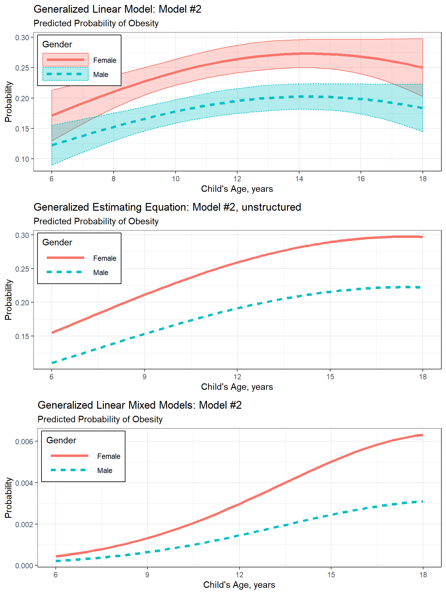
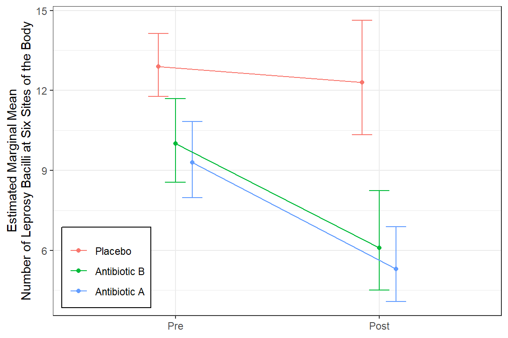
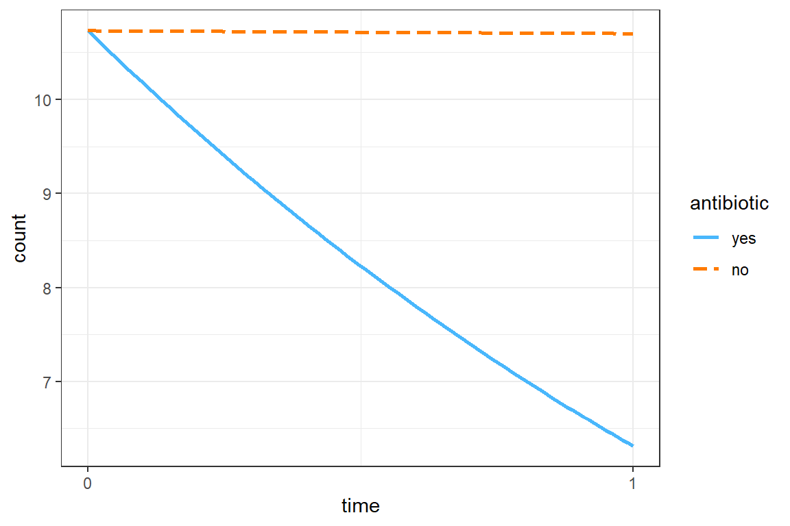

18 GEE, Count Outcome: Antibiotics for Leprosy
18.1 Packages
18.1.1 CRAN
library(tidyverse) # all things tidy
library(pander) # nice looking genderal tabulations
library(furniture) # nice table1() descriptives
library(texreg) # Convert Regression Output to LaTeX or HTML Tables
library(psych) # contains some useful functions, like headTail
library(interactions)
library(performance)
library(lme4) # Linear, generalized linear, & nonlinear mixed models
library(corrplot) # Vizualize correlation matrix
library(gee) # Genderalized Estimation Equation Solver
library(geepack) # Genderalized Estimation Equation Package
library(MuMIn) # Multi-Model Inference (caluclate QIC)18.2 Background
The following example is presented in the textbook: “Applied Longitudinal Analysis” by Garrett Fitzmaurice, Nan Laird & James Ware
The dataset maybe downloaded from: https://content.sph.harvard.edu/fitzmaur/ala/
Data on count of leprosy bacilli pre- and post-treatment from a clinical trial of antibiotics for leprosy.
Source: Table 14.2.1 (page 422) in Snedecor, G.W. and Cochran, W.G. (1967). Statistical Methods, (6th edn). Ames, Iowa: Iowa State University Press
With permission of Iowa State University Press.
Reference: Snedecor, G.W. and Cochran, W.G. (1967). Statistical Methods, (6th edn). Ames, Iowa: Iowa State University Press
The Background
The dataset consists of count data from a placebo-controlled clinical trial of 30 patients with leprosy at the Eversley Childs Sanitorium in the Philippines. Participants in the study were randomized to either of two antibiotics (denoted treatment drug A and B) or to a placebo (denoted treatment drug C).
Prior to receiving treatment, baseline data on the number of leprosy bacilli at six sites of the body where the bacilli tend to congregate were recorded for each patient. After several months of treatment, the number of leprosy bacilli at six sites of the body were recorded a second time. The outcome variable is the total count of the number of leprosy bacilli at the six sites.
The Research Question
In this study, the question of main scientific interest is whether treatment with antibiotics (drugs A and B) reduces the abundance of leprosy bacilli at the six sites of the body when compared to placebo (drug C).
The Data
Outcome or dependent variable(s)
count.prePre-Treatment Bacilli Countcount.postPost-Treatment Bacilli Count
Main predictor or independent variable of interest
drugthe treatment group: antibiotics (drugs A and B) or placebo (drug C)
18.2.1 Enter the data by hand!
data_raw <- tibble::tribble(
~drug, ~count_pre, ~count_post,
"A", 11, 6, "B", 6, 0, "C", 16, 13,
"A", 8, 0, "B", 6, 2, "C", 13, 10,
"A", 5, 2, "B", 7, 3, "C", 11, 18,
"A", 14, 8, "B", 8, 1, "C", 9, 5,
"A", 19, 11, "B", 18, 18, "C", 21, 23,
"A", 6, 4, "B", 8, 4, "C", 16, 12,
"A", 10, 13, "B", 19, 14, "C", 12, 5,
"A", 6, 1, "B", 8, 9, "C", 12, 16,
"A", 11, 8, "B", 5, 1, "C", 7, 1,
"A", 3, 0, "B", 15, 9, "C", 12, 20)18.2.2 Wide Format
data_wide <- data_raw %>%
dplyr::mutate(drug = factor(drug)) %>%
dplyr::mutate(id = row_number()) %>%
dplyr::select(id, drug, count_pre, count_post)
str(data_wide)tibble [30 × 4] (S3: tbl_df/tbl/data.frame)
$ id : int [1:30] 1 2 3 4 5 6 7 8 9 10 ...
$ drug : Factor w/ 3 levels "A","B","C": 1 2 3 1 2 3 1 2 3 1 ...
$ count_pre : num [1:30] 11 6 16 8 6 13 5 7 11 14 ...
$ count_post: num [1:30] 6 0 13 0 2 10 2 3 18 8 ...psych::headTail(data_wide) id drug count_pre count_post
1 1 A 11 6
2 2 B 6 0
3 3 C 16 13
4 4 A 8 0
5 ... <NA> ... ...
6 27 C 7 1
7 28 A 3 0
8 29 B 15 9
9 30 C 12 2018.2.3 Long Format
data_long <- data_wide %>%
tidyr::gather(key = obs,
value = count,
starts_with("count")) %>%
dplyr::mutate(time = case_when(obs == "count_pre" ~ 0,
obs == "count_post" ~ 1)) %>%
dplyr::select(id, drug, time, count) %>%
dplyr::arrange(id, time)
str(data_long)tibble [60 × 4] (S3: tbl_df/tbl/data.frame)
$ id : int [1:60] 1 1 2 2 3 3 4 4 5 5 ...
$ drug : Factor w/ 3 levels "A","B","C": 1 1 2 2 3 3 1 1 2 2 ...
$ time : num [1:60] 0 1 0 1 0 1 0 1 0 1 ...
$ count: num [1:60] 11 6 6 0 16 13 8 0 6 2 ...psych::headTail(data_long) id drug time count
1 1 A 0 11
2 1 A 1 6
3 2 B 0 6
4 2 B 1 0
5 ... <NA> ... ...
6 29 B 0 15
7 29 B 1 9
8 30 C 0 12
9 30 C 1 2018.3 Exploratory Data Analysis
18.3.1 Summary Statistics
data_long %>%
dplyr::group_by(drug, time) %>%
dplyr::summarise(N = n(),
M = mean(count),
VAR = var(count),
SD = sd(count)) %>%
pander::pander()summarise() has grouped output by ‘drug’. You can override using the .groups argument.
| drug | time | N | M | VAR | SD |
|---|---|---|---|---|---|
| A | 0 | 10 | 9.3 | 23 | 4.8 |
| A | 1 | 10 | 5.3 | 22 | 4.6 |
| B | 0 | 10 | 10.0 | 28 | 5.2 |
| B | 1 | 10 | 6.1 | 38 | 6.2 |
| C | 0 | 10 | 12.9 | 16 | 4.0 |
| C | 1 | 10 | 12.3 | 51 | 7.2 |
18.3.2 Visualize
data_long %>%
dplyr::mutate(time_name = case_when(time == 0 ~ "Pre",
time == 1 ~ "Post") %>%
factor(levels = c("Pre", "Post"))) %>%
dplyr::mutate(drug_name = fct_recode(drug,
"Antibiotic A" = "A",
"Antibiotic B" = "B",
"Placebo" = "C")) %>%
ggplot(aes(x = time_name,
y = count)) +
geom_line(aes(group = id)) +
facet_grid(.~ drug_name) +
theme_bw() +
labs(x = NULL,
y = "Number of Leprosy Bacilli at Six Sites of the Body")
data_long %>%
dplyr::mutate(time_name = case_when(time == 0 ~ "Pre",
time == 1 ~ "Post") %>%
factor(levels = c("Pre", "Post"))) %>%
dplyr::mutate(drug_name = fct_recode(drug,
"Antibiotic A" = "A",
"Antibiotic B" = "B",
"Placebo" = "C")) %>%
ggplot(aes(x = time,
y = count)) +
geom_line(aes(group = id),
color = "gray") +
geom_smooth(aes(group = drug),
method = "lm") +
facet_grid(.~ drug_name) +
theme_bw() +
labs(x = NULL,
y = "Number of Leprosy Bacilli at Six Sites of the Body")
data_long %>%
dplyr::mutate(time_name = case_when(time == 0 ~ "Pre",
time == 1 ~ "Post") %>%
factor(levels = c("Pre", "Post"))) %>%
dplyr::mutate(drug_name = fct_recode(drug,
"Antibiotic A" = "A",
"Antibiotic B" = "B",
"Placebo" = "C")) %>%
ggplot(aes(x = time,
y = count)) +
geom_smooth(aes(group = drug,
color = drug_name,
fill = drug_name),
method = "lm",
alpha = .2) +
theme_bw() +
labs(x = NULL,
y = "Number of Leprosy Bacilli at Six Sites of the Body",
color = NULL,
fill = NULL) +
scale_x_continuous(breaks = 0:1,
labels = c("Pre-Treatment", "Post-Treatment"))
18.4 Generalized Estimating Equations (GEE)
18.4.1 Explore Various Correlation Structures
18.4.1.1 Fit the models - to determine correlation structure
The gee() function in the gee package
mod_gee_ind <- gee::gee(count ~ drug*time,
data = data_long,
family = poisson(link = "log"),
id = id,
corstr = "independence")(Intercept) drugB drugC time drugB:time drugC:time
2.23001440 0.07257069 0.32721291 -0.56230758 0.06801126 0.51467953 mod_gee_exc <- gee::gee(count ~ drug*time,
data = data_long,
family = poisson(link = "log"),
id = id,
corstr = "exchangeable")(Intercept) drugB drugC time drugB:time drugC:time
2.23001440 0.07257069 0.32721291 -0.56230758 0.06801126 0.51467953 mod_gee_uns <- gee::gee(count ~ drug*time,
data = data_long,
family = poisson(link = "log"),
id = id,
corstr = "unstructured")(Intercept) drugB drugC time drugB:time drugC:time
2.23001440 0.07257069 0.32721291 -0.56230758 0.06801126 0.51467953 The GEE models display the robust (sandwich) standard errors.
18.4.1.2 Raw Estimates (Logit Scale)
texreg::knitreg(list(mod_gee_ind,
mod_gee_exc,
mod_gee_uns),
custom.model.names = c("Independence",
"Exchangeable",
"Unstructured"),
single.row = TRUE,
digits = 3,
caption = "GEE - Estimates on Log Scale")| Independence | Exchangeable | Unstructured | |
|---|---|---|---|
| (Intercept) | 2.230 (0.154)*** | 2.230 (0.154)*** | 2.230 (0.154)*** |
| drugB | 0.073 (0.220) | 0.073 (0.220) | 0.073 (0.220) |
| drugC | 0.327 (0.179) | 0.327 (0.179) | 0.327 (0.179) |
| time | -0.562 (0.176)** | -0.562 (0.176)** | -0.562 (0.176)** |
| drugB:time | 0.068 (0.246) | 0.068 (0.246) | 0.068 (0.246) |
| drugC:time | 0.515 (0.221)* | 0.515 (0.221)* | 0.515 (0.221)* |
| Scale | 3.474 | 3.474 | 3.474 |
| Num. obs. | 60 | 60 | 60 |
| ***p < 0.001; **p < 0.01; *p < 0.05 | |||
18.4.1.3 Exponentiate the Estimates (odds ratio scale)
texreg::knitreg(list(extract_gee_exp(mod_gee_ind),
extract_gee_exp(mod_gee_exc),
extract_gee_exp(mod_gee_uns)),
custom.model.names = c("Independence",
"Exchangeable",
"Unstructured"),
single.row = TRUE,
digits = 3,
ci.test = 1,
caption = "GEE - Estimates on Count Scale (RR)")| Independence | Exchangeable | Unstructured | |
|---|---|---|---|
| (Intercept) | 9.300 [6.882; 12.567]* | 9.300 [6.882; 12.567]* | 9.300 [6.882; 12.567]* |
| drugB | 1.075 [0.699; 1.655] | 1.075 [0.699; 1.655] | 1.075 [0.699; 1.655] |
| drugC | 1.387 [0.977; 1.970] | 1.387 [0.977; 1.970] | 1.387 [0.977; 1.970] |
| time | 0.570 [0.404; 0.805]* | 0.570 [0.404; 0.805]* | 0.570 [0.404; 0.805]* |
| drugB:time | 1.070 [0.661; 1.734] | 1.070 [0.661; 1.734] | 1.070 [0.661; 1.734] |
| drugC:time | 1.673 [1.086; 2.578]* | 1.673 [1.086; 2.578]* | 1.673 [1.086; 2.578]* |
| Dispersion | 3.474 | 3.474 | 3.474 |
| * Null hypothesis value outside the confidence interval. | |||
18.4.2 Interpretation
Antibiotic A Group: Starts with mean of 9.3 and drops by 45% (nearly cut in half) over the course of treatment.
Antibiotic B Group: Starts at about the same mean at Antibiotic A group and experiences the same decrease.
Control Group (C): Starts at about the same mean at Antibiotic A group BUT experiences a less than a 5% decrease over the student period while on the placebo pills.
18.4.3 Visualize the Final Model
18.4.3.1 Refit with the geeglm() function in the geepack package
mod_geeglm_exc <- geepack::geeglm(count ~ drug*time,
data = data_long,
family = poisson(link = "log"),
id = id,
corstr = "exchangeable")
summary(mod_geeglm_exc)
Call:
geepack::geeglm(formula = count ~ drug * time, family = poisson(link = "log"),
data = data_long, id = id, corstr = "exchangeable")
Coefficients:
Estimate Std.err Wald Pr(>|W|)
(Intercept) 2.23001 0.15362 210.736 <2e-16 ***
drugB 0.07257 0.22000 0.109 0.7415
drugC 0.32721 0.17907 3.339 0.0677 .
time -0.56231 0.17601 10.206 0.0014 **
drugB:time 0.06801 0.24599 0.076 0.7822
drugC:time 0.51468 0.22056 5.445 0.0196 *
---
Signif. codes: 0 '***' 0.001 '**' 0.01 '*' 0.05 '.' 0.1 ' ' 1
Correlation structure = exchangeable
Estimated Scale Parameters:
Estimate Std.err
(Intercept) 3.126 0.5128
Link = identity
Estimated Correlation Parameters:
Estimate Std.err
alpha 0.7352 0.08097
Number of clusters: 30 Maximum cluster size: 2 18.4.3.3 More Polished
mod_geeglm_exc %>%
emmeans::emmeans(~ drug*time,
type = "response") drug time rate SE df asymp.LCL asymp.UCL
A 0 9.3 1.43 Inf 6.88 12.57
B 0 10.0 1.57 Inf 7.34 13.62
C 0 12.9 1.19 Inf 10.77 15.45
A 1 5.3 1.39 Inf 3.17 8.87
B 1 6.1 1.85 Inf 3.37 11.04
C 1 12.3 2.14 Inf 8.74 17.31
Covariance estimate used: vbeta
Confidence level used: 0.95
Intervals are back-transformed from the log scale mod_geeglm_exc %>%
emmeans::emmeans(~ drug*time,
type = "response") %>%
data.frame() drug time rate SE df asymp.LCL asymp.UCL
1 A 0 9.3 1.429 Inf 6.882 12.567
2 B 0 10.0 1.575 Inf 7.344 13.616
3 C 0 12.9 1.187 Inf 10.771 15.449
4 A 1 5.3 1.393 Inf 3.166 8.872
5 B 1 6.1 1.846 Inf 3.370 11.040
6 C 1 12.3 2.145 Inf 8.739 17.312mod_geeglm_exc %>%
emmeans::emmeans(~ drug*time,
type = "response",
level = .68) %>%
data.frame() %>%
dplyr::mutate(time_name = case_when(time == 0 ~ "Pre",
time == 1 ~ "Post") %>%
factor(levels = c("Pre", "Post"))) %>%
dplyr::mutate(drug_name = fct_recode(drug,
"Antibiotic A" = "A",
"Antibiotic B" = "B",
"Placebo" = "C")) %>%
ggplot(aes(x = time_name,
y = rate,
group = drug_name %>% fct_rev,
color = drug_name %>% fct_rev)) +
geom_errorbar(aes(ymin = asymp.LCL,
ymax = asymp.UCL),
width = .3,
position = position_dodge(width = .25)) +
geom_point(position = position_dodge(width = .25)) +
geom_line(position = position_dodge(width = .25)) +
theme_bw() +
labs(x = NULL,
y = "Estimated Marginal Mean\nNumber of Leprosy Bacilli at Six Sites of the Body",
color = NULL) +
theme(legend.position = c(0, 0),
legend.justification = c(-0.1, -0.1),
legend.background = element_rect(color = "black"))
18.5 Follow-up Analysis
18.5.1 Collapse the Predictor
data_remodel <- data_long %>%
dplyr::mutate(antibiotic = drug %>%
forcats::fct_collapse(yes = c("A", "B"),
no = c("C")))18.5.2 Reduce the Model - gee::gee()
mod_gee_exc2 <- gee::gee(count ~ antibiotic:time ,
data = data_remodel,
family = poisson(link = "log"),
id = id,
corstr = "exchangeable") (Intercept) antibioticyes:time antibioticno:time
2.3734 -0.6329 0.1362 summary(mod_gee_exc2)
GEE: GENERALIZED LINEAR MODELS FOR DEPENDENT DATA
gee S-function, version 4.13 modified 98/01/27 (1998)
Model:
Link: Logarithm
Variance to Mean Relation: Poisson
Correlation Structure: Exchangeable
Call:
gee::gee(formula = count ~ antibiotic:time, id = id, data = data_remodel,
family = poisson(link = "log"), corstr = "exchangeable")
Summary of Residuals:
Min 1Q Median 3Q Max
-9.6185 -4.7333 -0.4843 3.5167 12.3815
Coefficients:
Estimate Naive S.E. Naive z Robust S.E. Robust z
(Intercept) 2.37335 0.1028 23.07801 0.08014 29.61589
antibioticyes:time -0.52487 0.1024 -5.12426 0.11124 -4.71827
antibioticno:time -0.01076 0.1142 -0.09421 0.15722 -0.06842
Estimated Scale Parameter: 3.405
Number of Iterations: 5
Working Correlation
[,1] [,2]
[1,] 1.0000 0.7803
[2,] 0.7803 1.000018.5.3 Compare Parameters
texreg::knitreg(list(extract_gee_exp(mod_gee_exc),
extract_gee_exp(mod_gee_exc2)),
custom.model.names = c("Original",
"Refit"),
single.row = TRUE,
digits = 3,
ci.test = 1,
caption = "Estimates on Count Scale (Exchangeable)")| Original | Refit | |
|---|---|---|
| (Intercept) | 9.300 [6.882; 12.567]* | 10.733 [9.173; 12.559]* |
| drugB | 1.075 [0.699; 1.655] | |
| drugC | 1.387 [0.977; 1.970] | |
| time | 0.570 [0.404; 0.805]* | |
| drugB:time | 1.070 [0.661; 1.734] | |
| drugC:time | 1.673 [1.086; 2.578]* | |
| antibioticyes:time | 0.592 [0.476; 0.736]* | |
| antibioticno:time | 0.989 [0.727; 1.346] | |
| Dispersion | 3.474 | 3.406 |
| * Null hypothesis value outside the confidence interval. | ||
18.5.4 Interpretation
The grand mean is a count of 10.73 at pre-treatment.
The mean count dropped by about 40% among those on antibiotics, but there was no decrease for those on placebo pills, exp(b) = 0.592, p < .05, 95% CI [0.476, 0.74].
18.5.5 Visualize
18.5.5.1 Refit with geepack::geeglm()
mod_geeglm_exc2 <- geepack::geeglm(count ~ antibiotic:time,
data = data_remodel,
family = poisson(link = "log"),
id = id,
corstr = "exchangeable")18.5.5.2 Quick
interactions::interact_plot(model = mod_geeglm_exc2,
pred = time,
modx = antibiotic) +
theme_bw()
18.5.5.3 More Polished
mod_geeglm_exc2 %>%
emmeans::emmeans(~ antibiotic*time,
type = "response",
level = .68) %>%
data.frame() %>%
dplyr::mutate(time_name = case_when(time == 0 ~ "Pre",
time == 1 ~ "Post") %>%
factor(levels = c("Pre", "Post"))) %>%
ggplot(aes(x = time_name,
y = rate,
group = antibiotic,
color = antibiotic)) +
geom_errorbar(aes(ymin = asymp.LCL,
ymax = asymp.UCL),
width = .3,
position = position_dodge(width = .25)) +
geom_point(position = position_dodge(width = .25)) +
geom_line(position = position_dodge(width = .25)) +
theme_bw() +
labs(x = NULL,
y = "Estimated Marginal Mean\nNumber of Leprosy Bacilli at Six Sites of the Body",
color = "Antibiotic A or B") +
theme(legend.position = c(0, 0),
legend.justification = c(-0.1, -0.1),
legend.background = element_rect(color = "black"))
mod_geeglm_exc2 %>%
emmeans::emmeans(pairwise ~ time | antibiotic,
adjust = "none")$emmeans
antibiotic = yes:
time emmean SE df asymp.LCL asymp.UCL
0 2.37 0.0801 Inf 2.22 2.53
1 1.84 0.1635 Inf 1.52 2.16
antibiotic = no:
time emmean SE df asymp.LCL asymp.UCL
0 2.37 0.0801 Inf 2.22 2.53
1 2.37 0.1774 Inf 2.02 2.72
Covariance estimate used: vbeta
Results are given on the log (not the response) scale.
Confidence level used: 0.95
$contrasts
antibiotic = yes:
contrast estimate SE df z.ratio p.value
time0 - time1 0.5307 0.113 Inf 4.694 <.0001
antibiotic = no:
contrast estimate SE df z.ratio p.value
time0 - time1 0.0029 0.157 Inf 0.018 0.9855
Results are given on the log (not the response) scale. mod_geeglm_exc2 %>%
emmeans::emmeans(pairwise ~ time | antibiotic,
type = "response",
adjust = "none")$emmeans
antibiotic = yes:
time rate SE df asymp.LCL asymp.UCL
0 10.73 0.86 Inf 9.17 12.6
1 6.31 1.03 Inf 4.58 8.7
antibiotic = no:
time rate SE df asymp.LCL asymp.UCL
0 10.73 0.86 Inf 9.17 12.6
1 10.70 1.90 Inf 7.56 15.2
Covariance estimate used: vbeta
Confidence level used: 0.95
Intervals are back-transformed from the log scale
$contrasts
antibiotic = yes:
contrast ratio SE df null z.ratio p.value
time0 / time1 1.7 0.192 Inf 1 4.694 <.0001
antibiotic = no:
contrast ratio SE df null z.ratio p.value
time0 / time1 1.0 0.157 Inf 1 0.018 0.9855
Tests are performed on the log scale 18.6 Conclusion
The Research Question
In this study, the question of main scientific interest is whether treatment with antibiotics (drugs A and B) reduces the abundance of leprosy bacilli at the six sites of the body when compared to placebo (drug C).
The Conclusion
Both of these antibiotics significantly reduce leprosy bacilli from the pre-level (M = 10.7, equivalent groups at baseline) to lower (M = 6.3), compared to no change seen when on the placebo.